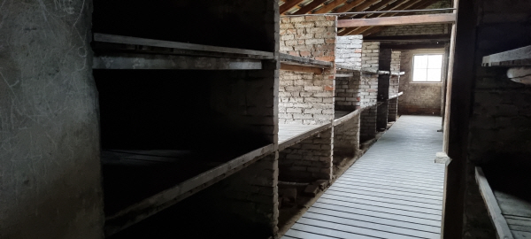
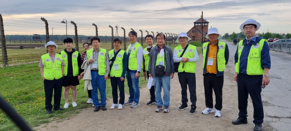
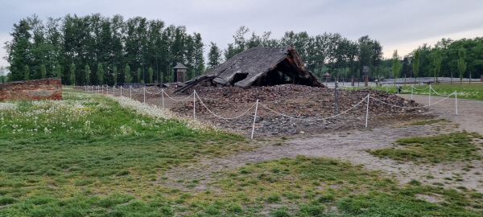
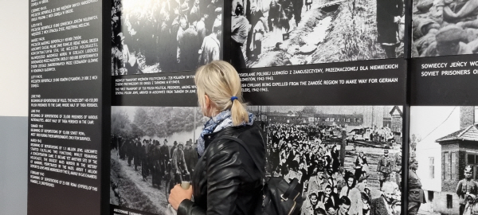

[우크라 난민캠프를 가다 ④] 역사를 잊은 민족에게 미래는 없다
- L20220518.99099005470i1.jpg [File Size:87.5KB]
- L20220518.99099005470i2.jpg [File Size:156.6KB]
- L20220518.99099005470i3.jpg [File Size:156.2KB]
- L20220518.99099005470i4.jpg [File Size:128.7KB]
유대인 대학살 현장 아우슈비츠 방문, 독가스실 등 둘러봐
이스라엘 자원봉사 활발…러시아는 민간인 학살의혹 휩싸여
러시아 미사일 공격이 집중되는 우크라이나 르비우와 인접한 폴란드 국경도시 프셰미실과 바르샤바 시내 난민캠프를 찾아다니면서 닷새째 의료지원 활동을 벌인 그린닥터스 ‘우크라이나 의료지원단’은 17일(현지시간) ‘아우슈비츠 수용소’를 방문했다. 이번에 폴란드 체류 내내 조국을 떠나와 정신적인 트라우마 속에 하루하루 힘들게 살아가고 있는 우크라이나 난민의 삶을 생생히 목격했던 ‘분단국가 대한민국 의료지원단’ 단원들로서는 아우슈비츠의 느낌이 남달랐다.

폴란드 ‘아우슈비츠 수용소’ 내부 모습.

그린닥터스 ‘우크라이나 의료지원단’이 17일(현지시간) 폴란드 ‘아우슈비츠 수용소’를
둘러본 뒤 기념촬영을 하고 있다.
아우슈비츠의 첫 번째 수용소는 2차 세계대전이 한창 진행 중이던 1940년 4월 폴란드 정치범을 수용하기 위해 하인리히 히믈러에 의해 만들어졌다. 히믈러는 나치독일 히틀러 체제 아래 권력 서열 2인자였다. 행정가였던 그는 비열한 정도로 히틀러에게 충성했고, 업무 성과를 과시하려고 유대인 대학살의 상징인 아우슈비츠를 설계한 거다.
이후 2, 3호 수용소가 잇따라 설립되면서 가스로 죄수를 처형하는 데 사용한 목욕탕, 처형당한 죄수들의 시체를 보관한 시체 보관실, 화장 막 등의 시설이 추가로 들어섬으로써 아우슈비츠는 대규모 유대인 집단 처형소가 됐다. 유럽 내 모든 유대인을 말살하려고 설치된 아우슈비츠에서의 총사망자 수는 100만∼250만 명으로 알려졌지만, 일부 학자는 400만 명에 이른다고 추산하고 있다. 2차 대전 당시 우방국이었던 소련의 진격으로 아우슈비츠는 차츰 폐기되어 갔고, 생존한 포로 대부분은 1945년 1월 또 다른 독일 집단수용소로 이송되었다고 한다.
폴란드는 높은 산이 거의 없는 평야 지대로, 어디든 360도 방향에서 지평선을 볼 수 있는 축복의 땅이다. 사방에서 지평선이 보이는 곳에 아우슈비츠 수용소가 들어서 있었다. 2차 대전 당시 이곳으로 끌려온 유대인을 감시하기 좋은 곳이기도 해서, 누군가에게 축복의 땅이 또 다른 사람에게는 마치 유리 벽에 갇힌 듯 지옥 같은 곳이었을 거다. 수용소 주변은 철조망으로 둘러쳐져 있었다. 당시 이 철조망은 1만 볼트가 넘는 고압 전기가 흐르고 있어, 유대인은 탈주를 꿈도 꾸지 못했을 거다.

폴란드 ‘아우슈비츠 수용소’ 외부.
넓은 아우슈비츠 수용소에서는 철도가 여러 갈래 연결돼 있었다. 독일군은 유럽 전역에서 유대인을 모아서 좋은 데로 이주시켜준다며 달콤하게 속이고 철로를 통해 아우슈비츠로 보냈을 거다. 몇몇 남아 있는 영상 사료(史料)에서 유대인들이 기차를 타기 전에 친척이나 지인에게 손을 흔들며 배웅하는 장면으로 미뤄보면 충분히 짐작된다.

폴란드 ‘아우슈비츠 수용소’ 내부.
기차로 아우슈비츠에 들어온 유대인은 노동 가능한 건장한 사람과 그렇지 못한 어린이나 여성, 노인 등으로 구분해서 노역장과 가스실로 보냈다고 한다. 노역장에 보낼 사람은 셔츠를 나눠줬고, 그렇지 않은 사람은 목욕시켜준다며 알몸으로 샤워실로 보내 몰 대신에 독가스를 살포해 집단 학살했다. 가스실에서 나온 시체는 곧바로 소각로에서 태웠다고 한다. 아직도 소각로 안에 시체를 얹었던 철판이 그대로 보존돼 있었다. 하루 1000명 이상의 사체를 소각했다는 관리인의 설명에 분노와 함께 공포심으로 모골이 송연해졌다. 소각로 한쪽에는 돌로 된 분류대가 있고, 거기서 나치는 금니나 은니 등 귀금속을 챙겼다니.
아우슈비츠에서는 일본군 737부대가 만주에서 우리 독립군에게 자행한 것과 같이 수용된 일부 유대인을 대상으로 인체실험을 했단다. 저비용으로 신속하게 불임하거나 살해하는 방법, 유럽 백인계인 우월한 아리안족을 늘리려고 쌍둥이의 시체 검시까지 했단다. 우리나라도 일제 강점기에 독립운동을 하던 수많은 애국지사가 만주 731부대에서 끔찍한 고문과 함께 인체실험의 대상자 ‘마루타’가 돼야 했던 역사적 사실이 머릿속에 떠올라 다시 한번 분노감에 몸을 떨어야 했다.
폴란드 정부가 2차 세계대전 때 세워진 아우슈비츠 수용소를 그대로 보존해 세계인의 평화교육 명소를 가꿔나가는 데 2차 대전 당시 나치가 수백만 명의 유대인을 학살한 천인공노할 전쟁범죄를 잊지 않고, 이 같은 불행한 역사가 두 번 다시 되풀이하지 않게 교훈으로 삼자는 따뜻한 의도가 깃들어 있을 거다. 여전히 일제 식민 지배 인정과 ‘위안부 할머니’에게 사과는커녕 역사적인 사실조차 부정하면서 평화의 소녀상까지 외교 쟁점화하고 있는 오늘날의 일본 정부와 너무나 딴판 아닌가.
이번 러시아의 우크라이나 침공으로 전쟁 초기 수많은 우크라이나 국민이 국경을 넘어 인접한 폴란드로 피란해 왔다. 그들은 프셰미실 같은 국경 난민 캠프나 바르샤바 시내 엑스포 캠프 등에서 간단한 입국 심사를 마치고는 폴란드에 잔류하거나, 철도를 이용해 각자 이주를 원하는 유럽의 여러 나라로 이동하고 있다고 한다. 2차 대전 때 나치의 만행을 역사적 교훈으로 받아들인 EU 국가는 우크라이나 난민에게 모든 철도요금을 받지 않는 것은 물론 그들에게 일자리까지 제공하는 등 마치 자기 나라 일처럼 발 벗고 나서서 우크라이나를 돕고 있었다.
특히, 나치 만행의 희생자였던 유대인의 나라 이스라엘에서는 수많은 자원봉사자가 폴란드와 우크라이나 국경지역의 난민캠프로 찾아와 생활필수품과 의료 지원 등 우크라이나를 돕는 데 앞장서고 있었다. 반면에 우크라이나를 침공한 러시아가 2차 세계대전 당시엔 우방으로서 나치독일의 만행을 규탄하고 아우슈비츠의 유대인을 구하는 데 일조했으면서도 거꾸로 이번엔 나치 독일처럼 이웃 나라 우크라이나를 공격하고 민간인을 학살하는 만행을 저지르다니. 러시아의 행위는 나치의 아우슈비츠 대학살과 일제의 731부대가 저지른 전쟁 범죄와 조금도 다르지 않으므로 세계인의 비난을 받아 마땅하다. 러시아는 아우슈비츠에서 역사적인 교훈을 얻지 못했다는 얘기다.
세계 유일의 분단국가인 대한민국의 의료봉사단체 그린닥터스는 이번 우크라이나 난민 의료지원 활동을 통해 ‘한 사람의 생명이 천하보다 귀하다’는 말과 ‘그 범죄는 용서하되 잊지는 말자’는 평범한 진리를 새삼 다시 일깨우는 소중한 시간을 가졌다. 역사를 잊은 민족에게 미래는 없다!
-정근 그린닥터스재단 이사장
정근 그린닥터스 이사장
출처: 국제신문
(http://www.kookje.co.kr/news2011/asp/newsbody.asp?code=0400&key=20220518.99099005470)